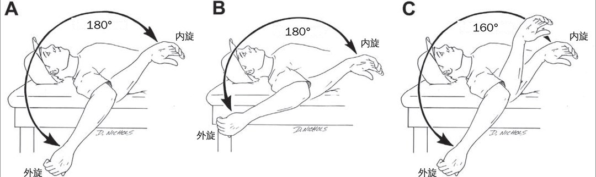
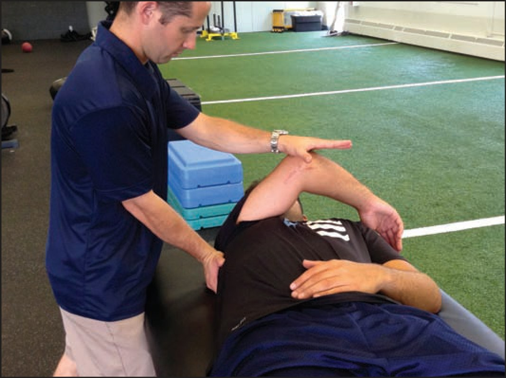
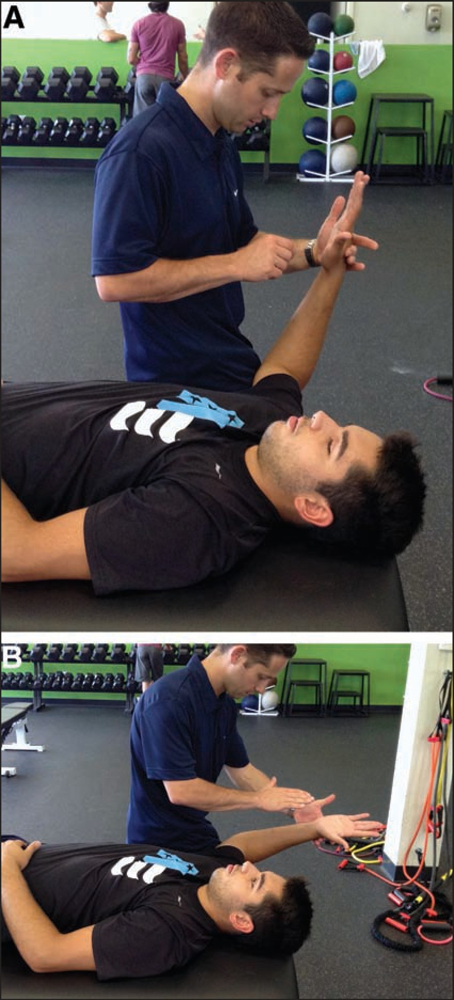
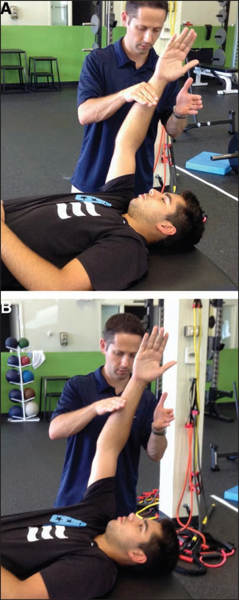
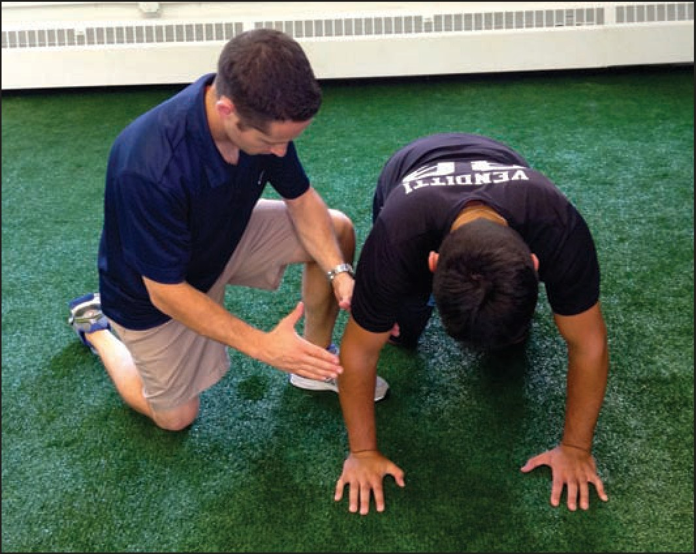
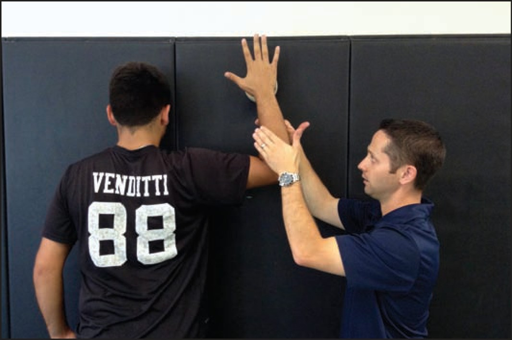
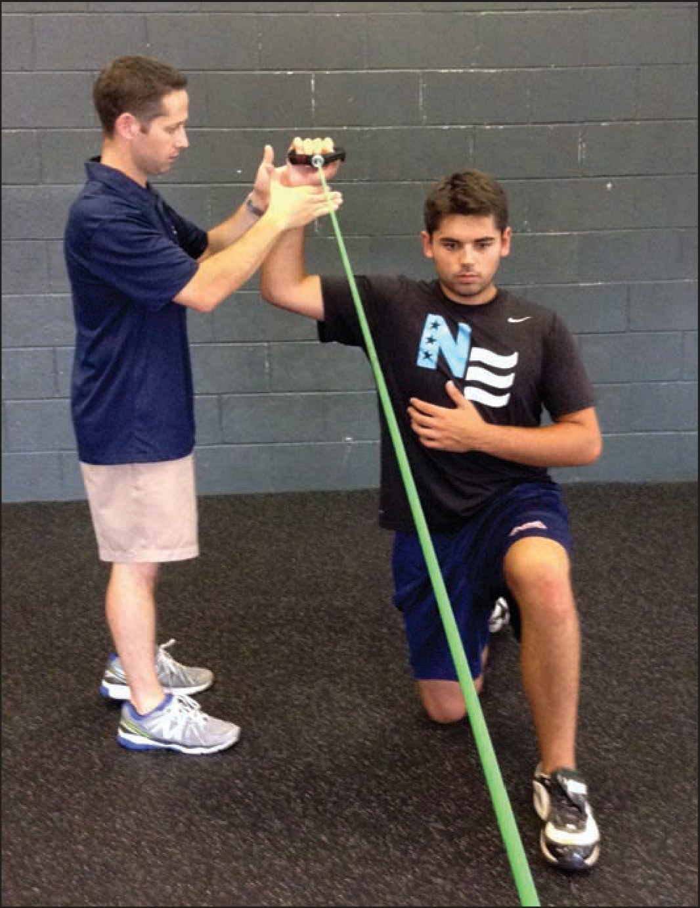
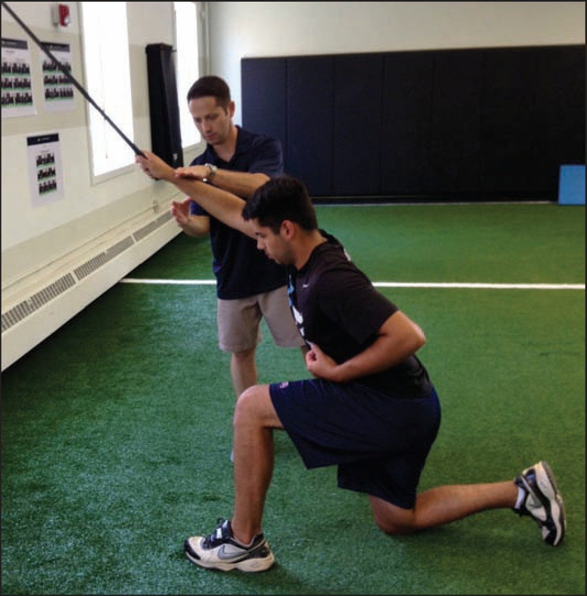
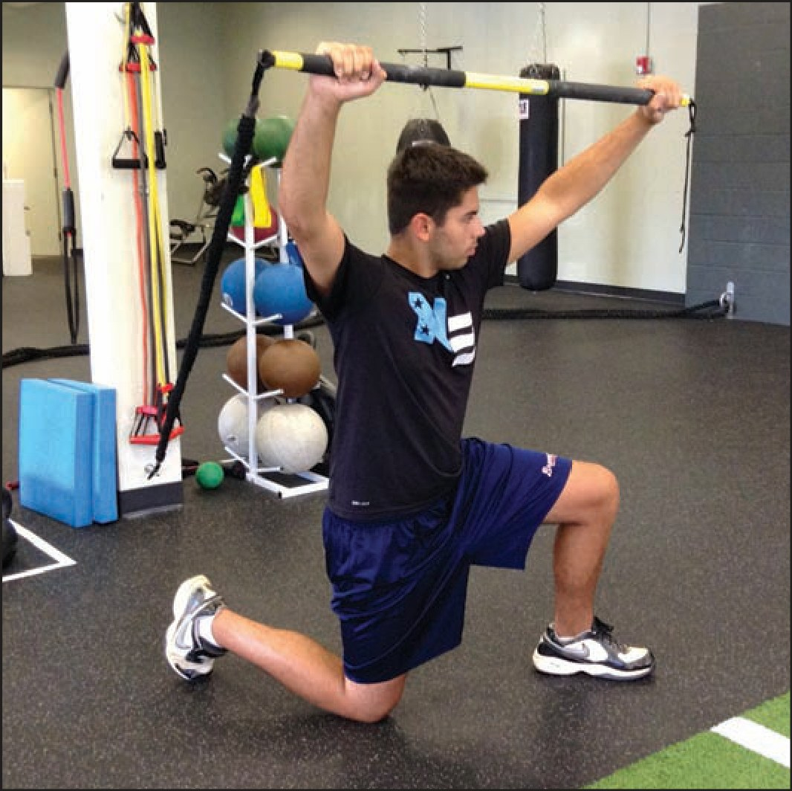

🔖原文首页（IJSPT 2013 年第 8 卷第 5 期）
📚 文献卡片
▪ 英文原题：Microinstability of the Shoulder in the Overhead Athlete（过头运动员的肩关节微不稳）
▪ 作者：Michael M. Reinold, PT, DPT, SCS, ATC, CSCS · Alan S. Curtis, MD
▪ 机构：Champion Physical Therapy and Performance（波士顿）· 新英格兰浸信会医院
▪ 期刊：International Journal of Sports Physical Therapy（IJSPT）
▪ 年卷期：2013;8(5):601-616
▪ PMCID：PMC3811734
▪ 文章类型：特邀临床评论（Invited Clinical Commentary）
▪ 证据级别：原文未标注（属于专家经验类综述）
▪ 关键词：Baseball · glenohumeral joint · internal impingement · rotator cuff · scapula · SLAP
"While gross instability is possible in the overhead, microinstability of the glenohumeral joint is seen far more frequently."
"过头运动员可能出现明显的肩关节不稳，但盂肱关节的微不稳要常见得多。"
投球的挥臂后期和加速早期，前方关节囊要承受巨大的牵拉。日积月累，关节囊胶原被慢慢拉长，外旋越来越大、前方越来越松。Reinold 发现，职业投手即使不做激进的拉伸，赛季末外旋也会比季前多 5°。
"Thus, the overhead athlete often walks the fine line between being mobile enough to perform, while stable enough to prevent injury to structures such as the rotator cuff, labrum, and capsule."
"因此，过头运动员常常在一条细线上行走：既要足够灵活以保证表现，又要足够稳定，避免肩袖、盂唇和关节囊受伤。"
这种“微不稳”本身不一定痛，但会让肱骨头向前移位，肩袖下表面撞上后上方关节盂和盂唇，进而加重肩袖肌腱炎、内撞击和 SLAP 损伤。所以治疗的核心不是把肩“拉松”，而是提高动态稳定性。
| 原则 | 核心要点 |
|---|---|
| ① 维持活动度 | 保持“投手的活动度”：总活动度（外旋＋内旋）双侧对称即可 |
| ② 维持肌力 | 重点练外旋肌、下斜方肌、前锯肌，先恢复基础力量 |
| ③ 动态稳定与神经肌肉控制 | 节律性稳定、反应性训练、闭链和增强式训练 |
| ④ 局部与整体稳定结合 | 肩→肩胛→胸廓→腰骨盆，下肢和核心同样重要 |
| ⑤ 按阶段推进 | 急性期→中间期→进阶强化期→回归期，达标才进阶 |
一句话概括：别把肩拉得更松，要让它在全范围内都能稳住。
过头运动员的肩活动度普遍偏大：
| 指标 | 范围 |
|---|---|
| 外旋 | 129°-137° |
| 内旋 | 54°-61° |
| 总活动度（外旋＋内旋） | 183°-198° |

🔖图1：总活动度概念：外旋加内旋等于总活动度。过头运动员的优势侧（A）与非优势侧（B）总活动度相同，只是整体向外旋方向偏移；病理性的内旋丢失会导致总活动度减少（C）
"As a general rule of thumb, if total motion is equal bilaterally, the authors of this paper do not recommend stretching of the shoulder to increase IR, regardless of the amount of side-to-side difference in IR."
"一个基本原则是：只要双侧总活动度相等，无论两侧内旋差多少，作者都不建议通过拉伸来增加内旋。"
• 为什么不拉：增加内旋会让总活动度超过非优势侧，进一步削弱肩的稳定
• 投球会让内旋暂时减少：作者认为这是外旋肌等后侧肌群在减速时的离心损伤，而不一定是后关节囊紧
• 总活动度减少才需要处理：多项研究显示总活动度丢失与受伤风险增加有关
• 先处理软组织：后侧肩袖、大圆肌、背阔肌、肩胛下肌常常张力过高，先恢复它们的长度和质地，再考虑激进的拉伸或关节松动
• 回归投掷前：必须恢复全范围活动度，可以用健侧的总活动度作为目标值
"Weakness of the above mentioned muscle groups is common in overhead athletes, and weakness of the external rotators and supraspinatus muscle has been associated with in-season throwing related injuries in professional baseball."
"上述肌群无力在过头运动员中很常见，而外旋肌和冈上肌无力与职业棒球赛季中的投掷相关损伤有关。"
作者重点强调 外旋肌、下斜方肌和前锯肌——这几块肌肉在受伤的过头运动员身上最常无力。功能性训练很重要，但必须先恢复基础力量，否则神经肌肉训练时会出现代偿。
"Neuromuscular control is one of the most overlooked, yet extremely important, components of injury prevention and treatment programs for the overhead athlete."
"神经肌肉控制是过头运动员损伤预防和治疗方案中最容易被忽视、却极其重要的部分。"
• 前方松弛与大学棒球运动员本体感觉下降有关
• 神经肌肉控制不只是盂肱关节，还包括肩胛胸壁关节——肩胛是肌肉附着的基础，也负责动态摆放关节盂
• 四类训练：节律性稳定、反应性神经肌肉控制、闭链训练、增强式训练
• 闭链训练让关节在负重下被挤压，刺激感受器、促进肩部力偶共同收缩
• 增强式训练利用肌肉预拉伸，激活牵张-缩短周期，提高神经肌肉协调
"Realistically, glenohumeral stability is dependent on scapulothoracic stability, which is strongly affected by the thorax, which is influenced by the lumbopelvic region and so forth."
"实际上，盂肱关节的稳定依赖肩胛胸壁关节的稳定，后者又受胸廓的强烈影响，而胸廓又受腰骨盆区域影响，依此类推。"
腰骨盆和胸廓排列一变，肩胛位置就变，关节盂的朝向也跟着变。作者认为下肢在投球发力中极其重要，核心稳定和下肢训练要贯穿康复全程。
急性期从受伤或术后立即开始，先停止投球。持续多久，取决于损伤的新旧程度和组织愈合的限制。
• 在受限范围内立即开始活动，从轻柔的被动和主动辅助活动开始
• 不要强行推进疼痛的外旋，用理疗等手段减轻疼痛炎症，再逐步恢复外旋
• 早期就做后侧肌群的手法治疗和柔韧训练

🔖图2：交臂水平内收拉伸：固定肩胛，把上臂向对侧拉过身体
"The cross body stretch is preferred as it is less stressful on the posterior capsule, easier to perform, and has been shown to be more effective in restoring glenohumeral range of motion than the sleeper stretch."
"作者更推荐交臂拉伸，因为它对后关节囊的应力更小、更容易做，而且研究显示它比睡姿拉伸更能有效恢复盂肱关节活动度。"
"In the authors’ experience, frequent, gentle stretching yields far superior results than the occasional aggressive stretch."
"根据作者经验，经常、轻柔的拉伸，效果远远好于偶尔一次的激进拉伸。"
⚠️睡姿拉伸（sleeper stretch）不是首选：它对肩关节刺激大，运动员自己做时也常做错。除非查体确认后关节囊确实受限，否则不做后关节囊的拉伸或松动。
留意姿势：投手常见圆肩、头前伸，肩胛前伸、前倾。肩胛前倾会导致内旋丢失，常伴胸小肌、上斜方肌、肩胛提肌紧张，下斜方肌、前锯肌和颈深屈肌无力；胸小肌紧张甚至可能压迫腋动脉，引起上肢疲劳、疼痛和发绀。
视损伤程度，从亚极量、无痛的多角度等长收缩开始，尤其强调在可用范围末端收缩。

🔖图3：内外旋节律性稳定训练：A 上臂外展 90°、中立旋转；B 外展 90°、外旋 90°

🔖图4：屈伸节律性稳定训练：上臂在肩胛平面上举 100°，A 肩胛不前伸；B 肩胛前伸
• 内外旋交替等长收缩，促进前后侧肩袖共同收缩
• 仰卧、上臂上举 90°-100°、水平外展 10°：肩袖和三角肌合力指向关节中心，产生肱骨头压缩力
• 进阶到 45°、120° 等不同上举角度，再加上肩胛前伸（图4B）
• 关节复位训练：闭眼，治疗师被动把上肢摆到某个位置后回到起点，让运动员主动回到刚才的位置

🔖图5：四点跪位负重下的投掷侧肩节律性稳定训练
先在肩关节水平以下做，减少关节囊应力：前后、左右重心转移→在球上转移→四点跪位。四点跪位更强调肩胛控制，同时要保持颈椎、脊柱中立和腰骨盆排列。
理疗：冰敷、高压电刺激、离子导入、超声，以及按需使用非甾体抗炎药。离子导入对急性期止痛消炎尤其有帮助。
被动活动度接近正常、具备基础力量后进入中间期。赛季中受伤或水平较高的运动员，常常直接从这一期开始，或者几天内就进入这一期。
• 等张训练：重点恢复肌力平衡，侧卧外旋和俯卧划船外旋能高度激活后侧肩袖
• 节律性稳定进阶：在活动度末端、闭眼进行
• PNF 模式：从可用范围进阶到全范围，在不同上举角度加入节律性稳定
• 徒手抗阻：治疗师在全范围内调整阻力，结合向心、离心收缩和末端节律性稳定
• 弹力带：进阶到外展 90° 位内外旋
• 闭链进阶：球上重心转移→球上或不稳定面俯卧撑；墙面手压小球稳定；毛巾在滑板上移动；Dynadisc 平衡垫上负重
• 同时进行全面的下肢力量和核心稳定训练
进入标准：疼痛和压痛轻微、全范围活动、关节囊活动度双侧对称、所有徒手肌力测试至少 4/5、上肢和肩胛有足够耐力和动态稳定能力。
• 外展 90° 位弹力带内外旋，加入离心和高速收缩
• 上肢力量训练注意：避免对肩前方牵拉过大的动作，如全幅卧推、双杠臂屈伸、肩上推举和颈后动作；后蹲可用安全深蹲杠代替标准奥林匹克杠
| 阶段 | 内容 |
|---|---|
| 双手训练 | 胸前传球、过头抛、左右交替抛，药球 3-5 磅（约 1.4-2.3 kg） |
| 单手训练（双手 10-14 天后） | 90/90 位棒球式抛球（2 磅球）、减速抛接、原地及半圆形对墙拍球 |
| 对墙拍球进阶 | 2 磅球进阶到 90/90 位，可加干扰和节律性稳定 |

🔖图6：90° 外展、90° 外旋位，在不稳定面上对墙进行闭链节律性稳定训练

🔖图7：外展 90°、外旋 90° 位弹力带抗阻时的节律性稳定训练
先在 0° 外展位做弹力带外旋，治疗师施加向心和离心阻力，并在末端加入节律性稳定，再进阶到 90/90 位。

🔖图8：带轻度牵拉力的弹力带节律性稳定训练，模拟随挥阶段
这个练习模拟投球减速和随挥阶段的巨大牵拉力，训练肩在牵拉下保持稳定。

🔖图9：用 TRX Rip Trainer 做节律性稳定训练，在一个练习中同时训练手臂、核心和腰骨盆的稳定
肩的局部稳定提高后，重点转向整体稳定：把上肢稳定训练融入劈砍、上提和模拟投球的全身动作中。
疲劳状态下投球，肩肘受伤风险更高。疲劳后肩外旋减少、球速下降、膝关节屈曲改变、肩内收力矩下降，本体感觉也会变差；肩袖疲劳后，抬臂时肱骨头会向上移位。耐力训练可以用对墙拍球和抛接球。
进入标准：疼痛或压痛轻微、全范围活动、力量平衡、本体感觉和动态稳定足够。
| 步骤 | 内容 |
|---|---|
| 长传 | 从 30-45 英尺（约 9-14 米）开始，逐步到 60、90、120 英尺（约 18、27、37 米） |
| 投手 | 完成长传后开始投手丘投球，逐步增加球数、力度，最后加入球种 |
| 野手 | 继续增加长传距离和位置专项训练 |
| 频率 | 通常每周 3 次、隔天一次，每一步重复 2-3 次再进阶 |
"A failure of conservative care is described as a lack of progress for 3 months or the inability to return to play by 6 months."
"保守治疗失败的定义是：3 个月没有进展，或 6 个月仍不能回归比赛。"
• 其他考虑因素：MRI 阳性发现、所处赛季时间
• 术中检查：麻醉下双肩对比检查；关节镜下看肱二头肌、二头肌锚、盂唇和关节囊；关节镜能轻松穿过关节（“drive-through 征”）提示松弛过度；外展外旋位观察肩袖下表面与后上盂唇的“对吻损伤”（病理性内撞击）
• Ⅰ到Ⅱ+ 级不稳：通常关节镜下关节囊折叠（pinch-and-tuck 技术）
• 慎做肩袖间隙闭合：会限制外旋，只在明显松弛时才做
• Ⅲ+ 级松弛：关节镜折叠可能不够，可做经肩胛下肌劈开的开放关节囊移位，或水平关节囊缝合
| 时间 | 力量训练 | 活动度 |
|---|---|---|
| 术后立即 | — | 受限的被动活动；不做过度拉伸，不做过度外旋、上举或后伸 |
| 7-10 天 | 亚极量、无痛等长收缩 | — |
| 10-14 天 | 轻负荷等张训练，强调外旋和肩胛 | — |
| 第 5 周 | 完整的肩袖和肩胛训练方案 | — |
| 第 6 周 | — | 外旋达到 75° |
| 第 6-8 周 | — | 前屈 170°-180° |
| 第 8 周 | 双手增强式训练（限制外旋） | 外展 90° 位外旋达到 90° |
| 第 8 周后 10-14 天 | 单手增强式训练 | — |
| 第 12 周 | 激进的强化训练 | 外旋逐步恢复到 115°（不早于第 12 周） |
| 第 16 周 | 逐步恢复投球 | — |
| 9-12 个月 | 回归过头运动 | — |
"The lack of full external rotation in the overhead athlete after surgery is a common cause of symptoms during rehabilitation and throwing."
"过头运动员术后外旋恢复不全，是康复和投球过程中出现症状的常见原因。"
⚠️ 投手通常需要 115° 甚至更多的外旋，但不要激进地拉伸超过 115°-120°，剩下的“正常”活动度通过增强式训练等功能性活动自然恢复。
| 第Ⅰ期 急性期 | |
| 目标 | • 减轻疼痛和炎症 • 改善后侧柔韧性 • 重建后侧力量和动态稳定（肌力平衡） • 控制功能性应力 |
| 治疗 | 停止投球，直到无痛、全范围活动且力量完全恢复——具体时间由医疗团队决定 |
| 理疗 | • 离子导入 • 超声药物透入 • 按需电刺激和冷疗 |
| 柔韧性 | • 在外展 90° 位改善内旋，恢复到正常的总活动度 • 增加水平内收柔韧性 • 逐步拉伸外旋和前屈——不要强行推进疼痛的外旋 |
| 训练 | • 肩袖强化（尤其外旋），轻到中等负荷：弹力带内外旋、侧卧外旋 • 肩胛强化：后缩肌、下压肌、前伸肌 • 徒手抗阻：侧卧外旋、仰卧外展 45° 外旋、俯卧划船、侧卧肩胛平面前屈 • 动态节律性稳定训练 • 本体感觉训练 • 训练时按需对后侧肩袖电刺激 • 闭链训练 • 全程维持核心、下肢和体能 • 维持肘、腕和前臂力量 |
| 进阶标准 | • 疼痛或炎症轻微 • 内旋和水平内收活动度恢复正常 • 具备基础肌力且不易疲劳 |
| 第Ⅱ期 中间期 | |
| 目标 | • 推进力量训练 • 恢复肌力平衡（外旋 / 内旋） • 增强动态稳定 • 维持柔韧和活动度 • 改善核心稳定和下肢力量 |
| 柔韧性 | • 有控制地做拉伸和柔韧训练，尤其是内旋和水平内收 • 逐步恢复完整外旋 |
| 训练 | • 推进力量训练 • 完整的肩袖和肩胛等张训练，开始加重 • 开始动态稳定方案：侧卧外旋加节律性稳定、弹力带外旋加末端节律性稳定、墙面手压球稳定、球上俯卧撑稳定 • 可以开始双手增强式抛球：胸前传球、左右抛、足球式过头抛 |
| 进阶标准 | • 全范围无痛活动 • 肌力 5/5 且不疲劳 |
| 第Ⅲ期 进阶强化期 | |
| 目标 | • 积极的强化训练 • 推进神经肌肉控制 • 提高力量、爆发力和耐力 • 开始轻度投掷 |
| 训练 | • 训练前拉伸，继续使总活动度恢复正常 • 继续上述力量训练 • 重新开始上肢训练 • 动态稳定训练：外展 90° 位弹力带外旋加末端节律性稳定；外展 90°、外旋 90° 位墙面稳定；外展 90°、外旋 90° 位对墙拍球加节律性稳定 • 增强式训练：双手训练；单手训练（90/90 抛球、减速抛、对反弹网抛球） • 训练后拉伸 |
| 进阶标准 | • 全范围活动和全部力量 • 足够的动态稳定能力 • 康复进程到此为止都合适 |
| 第Ⅳ期 回归期 | |
| 目标 | • 进入投球计划 • 继续力量和柔韧训练 • 回归比赛投球 |
| 训练 | • 拉伸和柔韧训练 • 肩部训练方案 • 增强式训练方案 • 动态稳定训练 • 进阶到间歇投球计划 • 在可耐受范围内逐步回归比赛投球 |
▪️值得肯定的部分：
• 作者是职业棒球领域经验丰富的康复专家和骨科医生，方案贴近实战
• “总活动度对称就不拉内旋”的原则清晰实用，可以避免过度拉伸
• 从局部稳定到整体稳定、从双手到单手增强式训练，进阶逻辑清楚
• 给出了术后康复的具体时间节点和活动度目标
▪️需要谨慎看待的部分：
• 以专家经验为主：文中多处是“作者认为”“根据作者经验”，没有疗效数据
• 非手术康复的四个阶段只给了进阶标准，没有给时间范围和训练剂量（组数、次数、负荷）
• 正文说节律性稳定在“肩胛平面外展 30°”做，而图 3 的图注写的是外展 90°，两者不一致
• 交臂拉伸优于睡姿拉伸只引用了一项研究，后续文献的结论并不完全一致
• 术后时间线是针对关节囊折叠手术的示例，合并肩袖或 SLAP 修复时需要另行调整
外旋＋内旋双侧相等，就不需要专门拉内旋；总活动度少了，才去找原因——先查后侧肌肉，再查关节囊。
每天多次轻柔的交臂拉伸，比偶尔一次用力的睡姿拉伸效果更好、风险更小。
侧卧外旋和俯卧划船外旋是后侧肩袖的高效动作。基础力量没恢复，不要急着上复杂的神经肌肉训练。
从中立位到 90/90 位，从开链到闭链，从稳定面到不稳定面，从局部到全身，让肩在越来越接近投球的姿势下学会稳住。
第 12 周前不追 115° 外旋，也不激进地拉超过 115°-120°，让增强式训练帮投手找回“正常”的投球活动度。
① 活动度：总活动度对称即可，不追求更多内旋
② 力量：外旋肌、下斜方肌、前锯肌优先
③ 动态稳定：节律性稳定、闭链、增强式训练逐级进阶
④ 整体稳定：肩胛、胸廓、腰骨盆、下肢一起练
⑤ 回归：长传→投手丘，按标准而非时间推进
⑥ 手术：3 个月无进展或 6 个月不能回归再考虑
欢迎关注悦美力公众号，获取更多物理治疗的专业知识！
📄参考文献：
Reinold MM, Curtis AS. Microinstability of the Shoulder in the Overhead Athlete. Int J Sports Phys Ther. 2013;8(5):601-616. PMCID: PMC3811734.
文中图片均来自原文，图 1 中的英文标注已译为中文，仅用于学术交流。